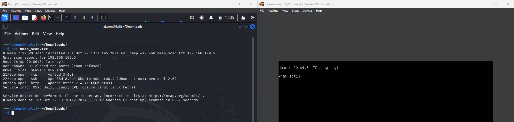

Welcome to My Portfolio
Aspiring Cybersecurity Professional | CTF Competitor | Security+ Certified
Explore my work, skills, and passion for cybersecurity.
About Me
I am a recent graduate in Cybersecurity, passionate about protecting digital assets and solving complex security challenges. With expertise in networking, ethical hacking, and vulnerability assessments, I aim to contribute to a safer digital world.
Accomplishments
Top 2 in JDF Security Code Sprint
Ranked among the top 2 in the JDF Security Code Sprint, competing against leading security firms and organizations in Jamaica for two consecutive years.
Completed Multiple TryHackMe Challenges
Successfully completed several TryHackMe machines and activities, including vulnerable machines designed for Capture The Flag (CTF) competitions.
Created Vulnerable Machines for CTF
Developed multiple vulnerable machines designed for use in Capture The Flag competitions and cybersecurity training.
Skills
-
Network Security
Developed and implemented secure network protocols, designed firewalls and intrusion detection systems, and performed regular security audits.
-
Ethical Hacking
Conducted ethical hacking exercises such as penetration testing and vulnerability scanning, identifying and addressing security flaws in web applications and networks.
-
Incident Response
Coordinated and executed incident response strategies, analyzing logs, investigating breaches, and implementing recovery plans in critical situations.
-
SIEM and Threat Intelligence
Managed and analyzed security events and alerts using SIEM platforms like Splunk, contributing to threat detection and real-time monitoring.
-
Vulnerability Assessment
Lead vulnerability assessment projects by scanning systems, identifying weak points, and recommending fixes to strengthen digital defenses.
Featured Projects
Custom Vulnerable Machines
Created vulnerable environments for cybersecurity training and simulations
HTTP Proxy Server

Created a custom HTTP proxy server for cybersecurity training, simulating real-world network environments and vulnerabilities for penetration testing and security assessments.